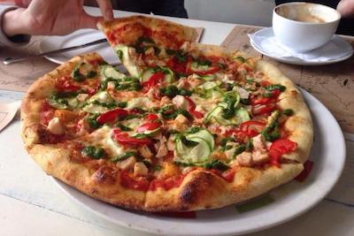

Blog sur Saint-Pétersbourg
Accueil
Visiter
Sortir
Restaurants
Mes Photos
Contact
Où manger à Saint-Pétersbourg ?
Cliquez sur le type de plat que vous souhaitez déguster pour découvrir les listes associées !
Caviar & Fruits de mer
Kazakh & Géorgien
Café
Asiatiques

Italiens
Steak House